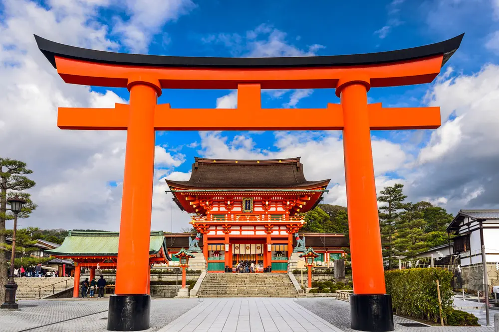
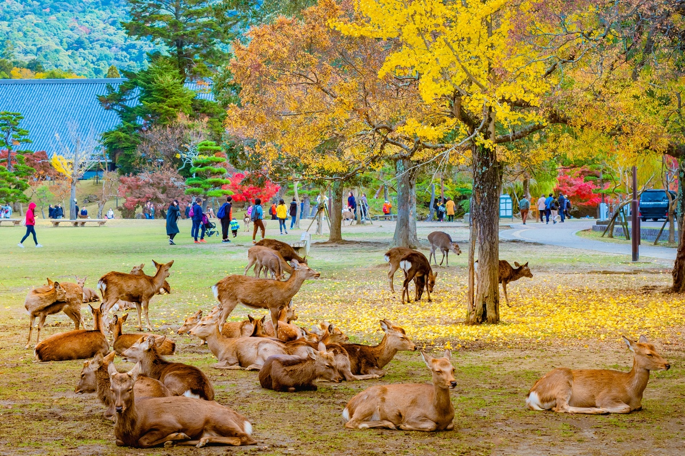

Japan
Japan is an island country located in East Asia. It is known for its advanced technology, rich culture, beautiful landscapes, and historic traditions. Japan attracts millions of visitors every year.
History
Japan has a long history that spans thousands of years. From ancient samurai traditions to modern development, the country has played an important role in global culture and innovation.
Culture
Japanese culture includes traditional arts, tea ceremonies, festivals, anime, and modern pop culture. The country is famous for respecting tradition while embracing modern life.
Tourism
Tourism in Japan continues to grow rapidly. Visitors travel to experience temples, modern cities, nature, and seasonal beauty such as cherry blossoms.
Famous Places
Popular places in Japan include Tokyo, Kyoto, Mount Fuji, Osaka, and Hiroshima. These locations offer a mix of modern attractions and historical landmarks.
Gallery




Japan
| Capital | Tokyo |
| Region | East Asia |
| Population | 125 Million+ |
| Famous For | Technology, Culture, Mount Fuji |
| Main Language | Japanese |
| Best Time to Visit | March to May, September to November |